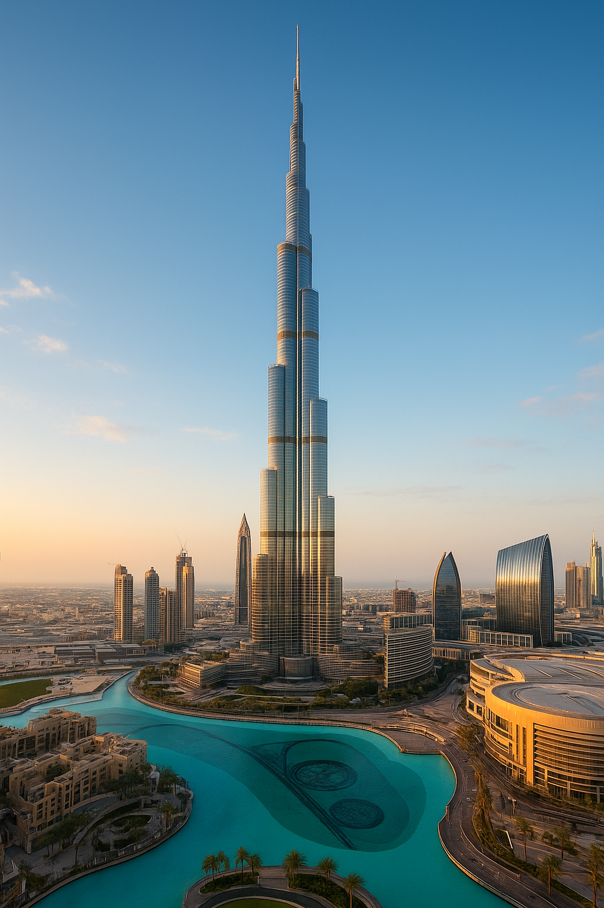

Ranking największych budynków świata
1.Burdż Chalifa - wieżowiec w Dubaju, w Zjednoczonych Emiratach Arabskich, zbudowany przez przedsiębiorstwa Samsung Constructions, BESIX i Arabtec, o wysokości 828 metrów[5]. Najwyższy budynek świata, który pobił rekord wysokości dla budowli dzierżony wcześniej przez polski Maszt radiowy w Konstantynowie (646m). Jego nazwa pochodzi od imienia szejka Chalify ibn Zajida Al Nahajjana, byłego prezydenta Zjednoczonych Emiratów Arabskich.
Budowa, rozpoczęta 21 września 2004, zakończyła się 16 sierpnia 2009. Wysokość 827,9 metrów została osiągnięta 17 stycznia 2009, a oficjalne otwarcie nastąpiło 4 stycznia 2010. Budynek ma 163 piętra użytkowe. Koszt jego budowy wyniósł 1,5 miliarda dolarów[6].

2.Kuala_lumpur